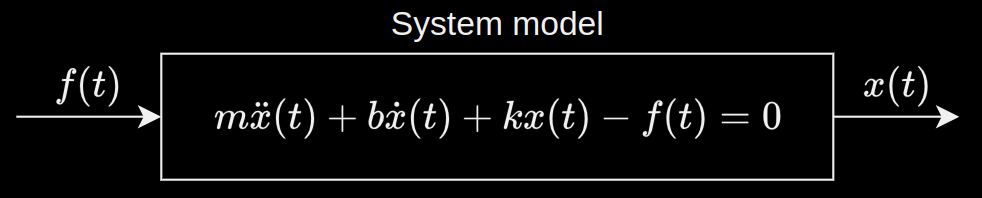

A spring force $F_s$ acts in the oppposite direction to the direction of displacement from the equilibrium point and is proportional to it. For a positive displacment, the spring expands and the spring force tends to bring the object to its equilibrium position.
$$
F_s = -k_sd_{em}
$$
Damping force
The damper dampens any mechanical oscillations. It is proportional to the velocity and acts opposite to the direction of movement.
$$
F_d = -k_d\dot{d}_{em}
$$
Translational dynamics
Overview
The dynamics is governed by Newton's second law:
$$\begin{align}
&ma = \sum_{i=1}^{n}F_i \nonumber \\
&m\ddot{d}_{em} = F - k_d\dot{d}_{em} - k_sd_{em} \nonumber \\
\label{eq:msd} &m\ddot{d}_{em} + k_d\dot{d}_{em} + k_sd_{em} = F
\end{align}$$
The equation of motion is a second-order, linear ODE:
Linear because $d_{em}, \dot{d}_{em}, \ddot{d}_{em}$ appear as linear functions
Second order because it is the order of the highest derivative
General form
In general, the differential equation of motion can be written as:
$$\begin{align*}
m\ddot{x}(t) &= F_{input}(t) - F_{damper}(t) - F_{spring}(t) \\
m\ddot{x}(t) &+ b\dot{x}(t) + kx(t) - f(t) = 0 \\
\end{align*}$$
Given an external input or an excitation into the model, i.e. a force applied to the system, and the initial condition, the ODE can be solved to get the position of the mass over time $x(t)$. Unknown terms (mass, spring constant and damping coefficient) are written as variables. [Using RLS to find the unknown coefficients]

Mathematical model of the cart system
Aim
The analytical solution to equation \ref{eq:msd} is given by:
$$
d_{em} = d_{em}(t, d_{em}(0), \dot{d}_{em}(0), F(t))
$$
$d_{em}(0), \dot{d}_{em}(0)$ are the initial position and velocity. The goal is to numerically solve \ref{eq:msd} instead of using the analytical form.